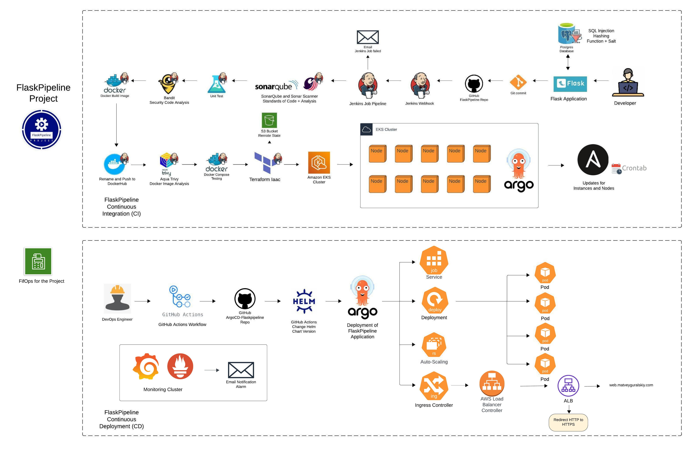
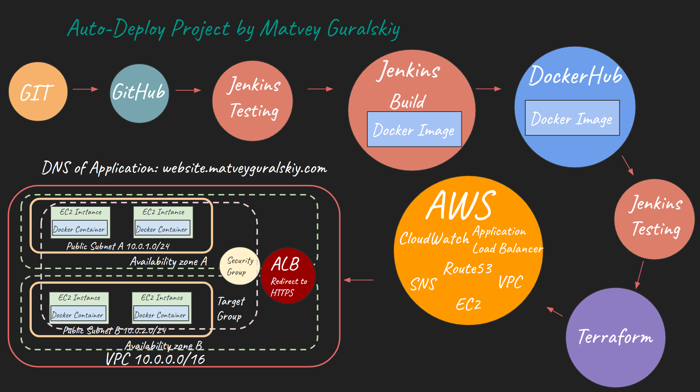

My Projects
Explore a curated collection of projects that highlight my practical expertise in applying DevOps principles, designing and deploying resilient cloud architectures, and developing efficient software solutions through automation and continuous integration/delivery
DribbleData Project
DribbleData project is a microservices architecture where Flask services integrate with AWS for a scalable, secure, and flexible system. With Kubernetes containerization and CI/CD automation GitHub Actions.

FlaskPipeline Project
This project automates the deployment of Flask applications to improve efficiency using CI/CD practices. It integrates tools for continuous integration and continuous deployment to ensure smooth and consistent updates.

Auto-Deploy Project
This project simplifies the process of deploying applications through automation. It uses continuous integration and continuous deployment (CI/CD) practices to ensure smooth and efficient updates.